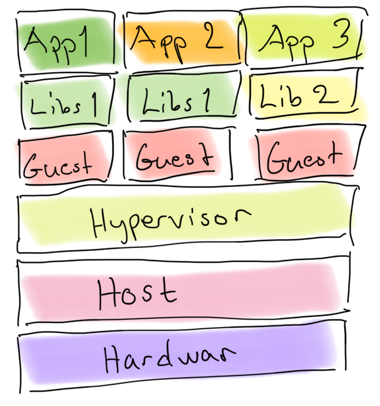
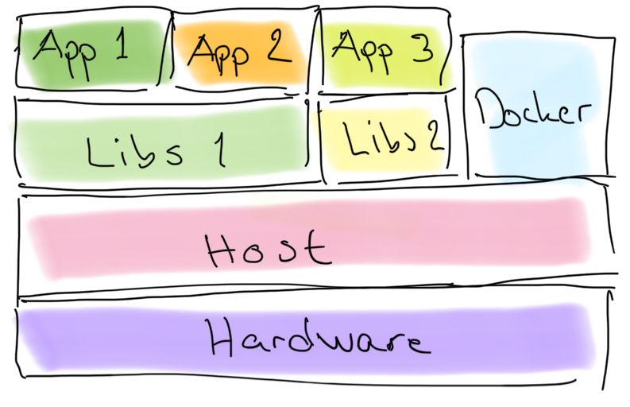
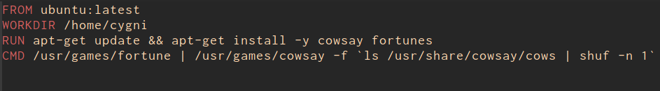
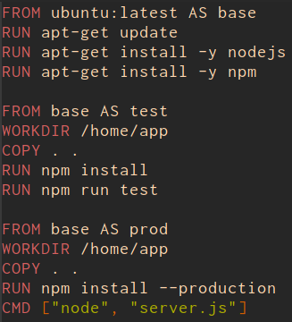

Talangprogrammet
Virtualisation
- Emulate the hardware on top of another operating system
- Multiple virtual machines simultaneously on one host
- Possibly with different operating systems
- Package entire environments into one distributable unit
- Snapshots
Hypervisors
OS Level
- VMware ESX
- Microsoft Hyper-V
Hosted
- VMware
- Virtualbox
- Parallels
- XEN
- KVM
Containerization
- Solaris Zones
- BSD Jails
- LXC
- Docker
- Rkt
Virtual machines

Containers

Dockerfile

Build
docker build -t random_cow .
Run
docker run --rm random_cow
Layers
- Docker is building containers in layers
- Layers are cached to improve efficiency and reuse
Multi Stage Build

Docker Compose
Took for running multi-container Docker applications.